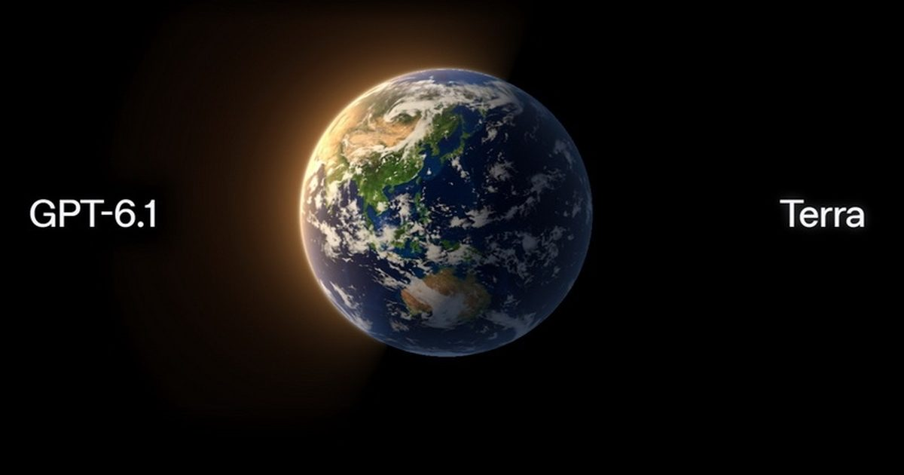

OpenAI представила GPT-6.1 Terra — быструю модель для самостоятельной работы на компьютере
Компания OpenAI выпустила GPT-6.1 Terra — новую языковую модель с поддержкой визуального анализа, ориентированную на автоматизацию рабочих задач и быстрое управление компьютером.
Нейросеть представляет собой значительный шаг вперёд по сравнению с моделью предыдущего поколения GPT-5.6 Terra и предлагает пользователям повышенную скорость работы.
Источник изображений: OpenAI